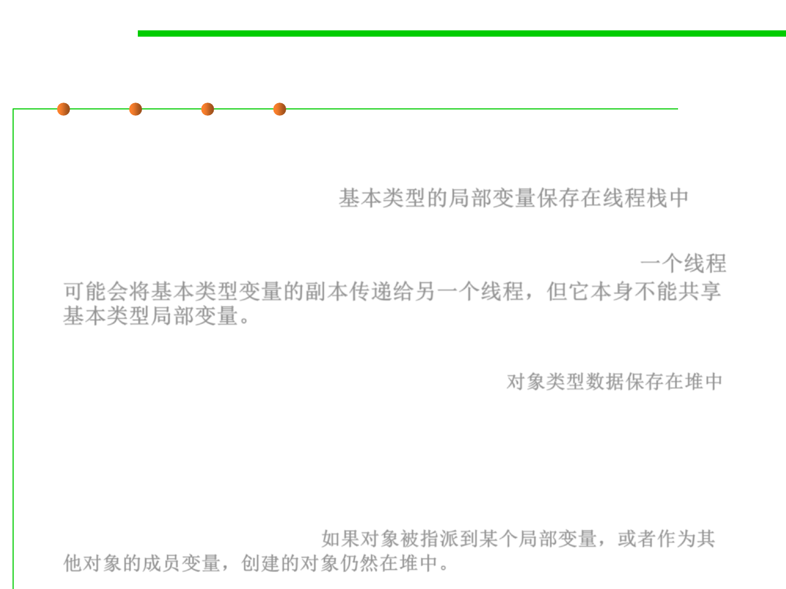

8.1 Metrics, Principles, and Methods of Construction for Performance
The Internal Java Memory Model: Heap
▪ All local variables of primitive types (boolean, byte, short, char, int,
long, float, double) are fully stored on the thread stack and are thus
not visible to other threads. 基本类型的局部变量保存在线程栈中
▪ One thread may pass a copy of a primitive variable to another
thread, but it cannot share the primitive local variable itself.一个线程
可能会将基本类型变量的副本传递给另一个线程，但它本身不能共享
基本类型局部变量。
▪ The heap contains all objects created in your Java application,
regardless of what thread created the object. 对象类型数据保存在堆中
▪ This includes the object versions of the primitive types (e.g. Byte,
Integer, Long, etc).
▪ It does not matter if an object was created and assigned to a local
variable, or created as a member variable of another object, the object
is still stored on the heap. 如果对象被指派到某个局部变量，或者作为其
他对象的成员变量，创建的对象仍然在堆中。